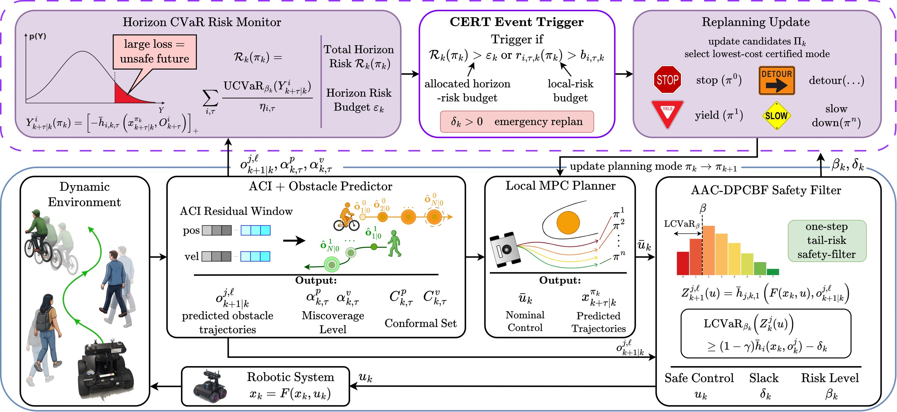
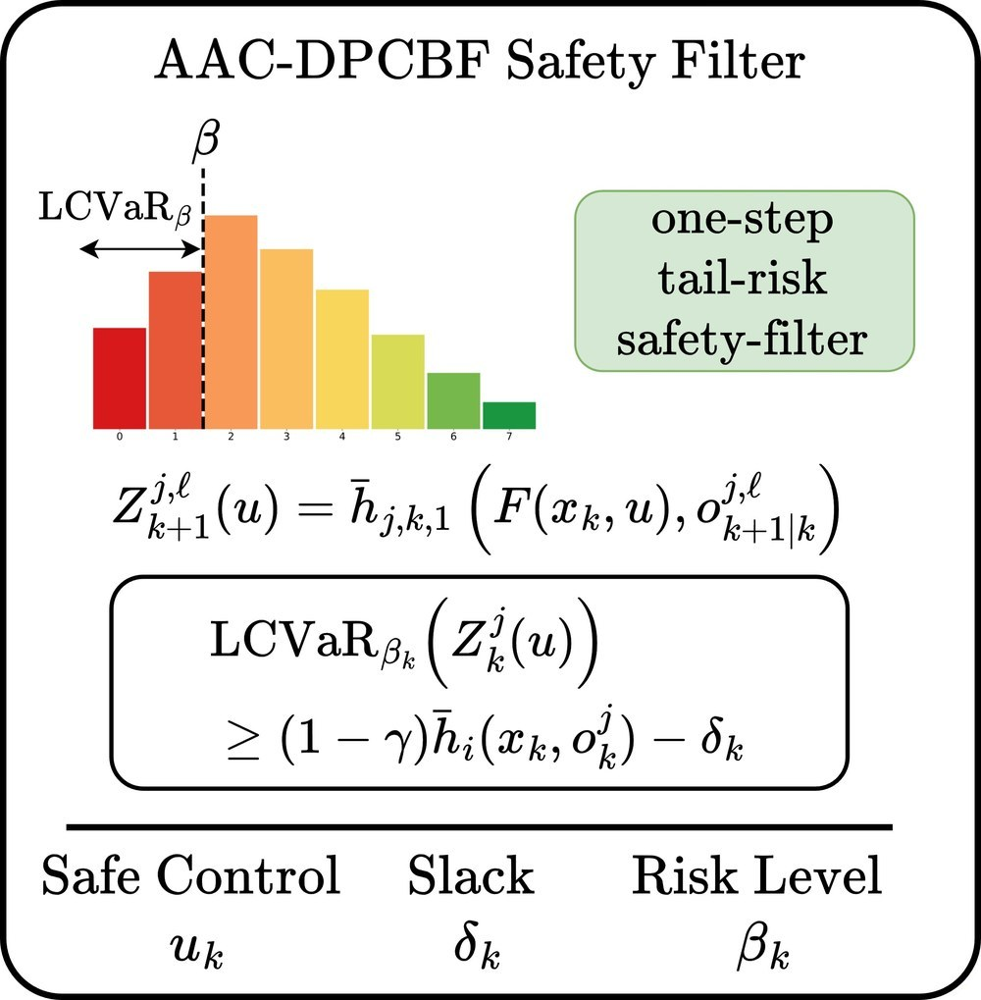
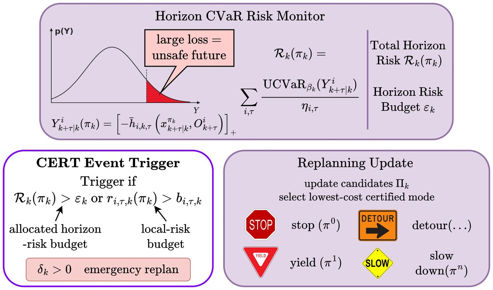
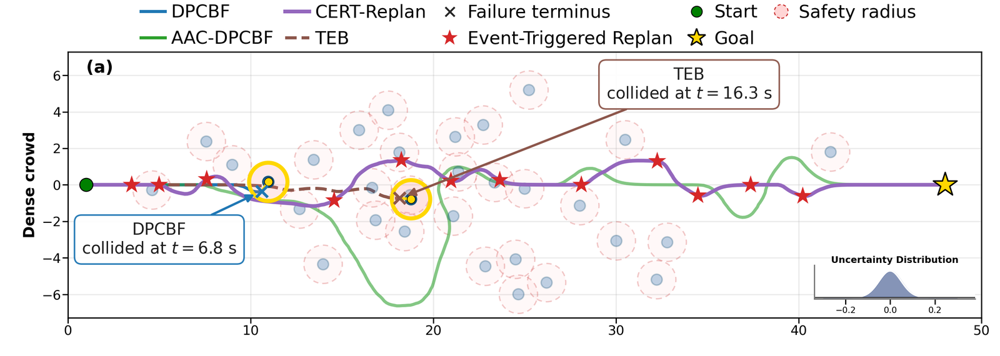
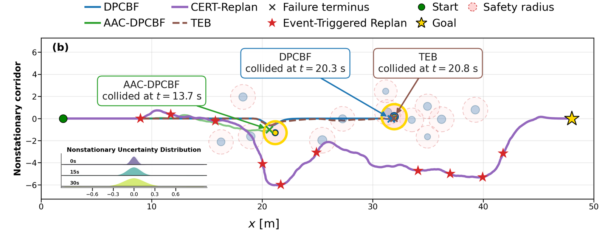
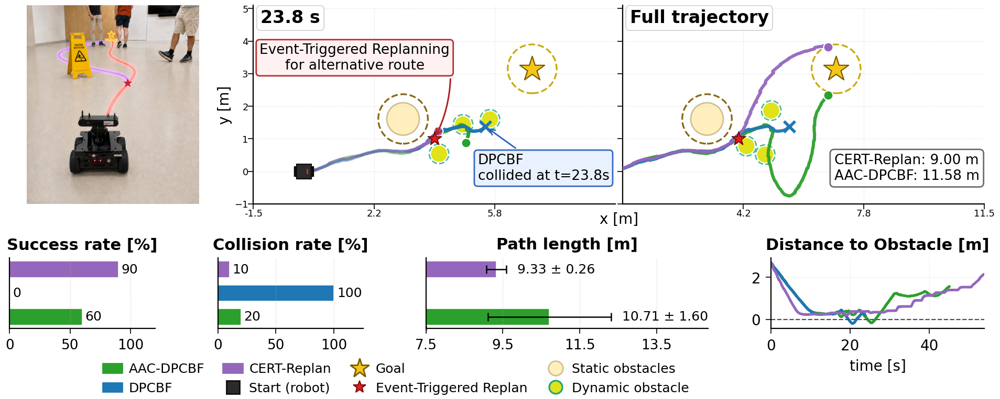
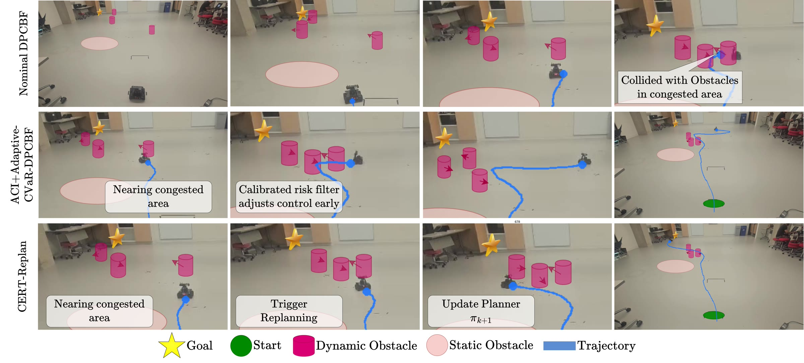

Adaptive Risk-Certified Event-Triggered Replanning for Dynamic Navigation
Richie Ryulie Suganda1,Bin Hu2
1Department of Electrical and Computer Engineering, University of Houston, Houston, TX 77004, USA 2Department of Engineering Technology, University of Houston, Houston, TX 77004, USA
Safe navigation in dynamic environments requires robots to plan under obstacle predictions whose errors are uncertain, non-stationary, and can induce rare but safety-critical failures. Existing control-barrier-function safety filters can reject immediately unsafe controls, but they provide little guidance on when the current finite-horizon planning mode itself is becoming unsafe as prediction uncertainty evolves.
We propose Conformal Event-Triggered Risk-Certified Replanning (CERT-Replan), a framework that uses calibrated barrier risk as an early-warning signal for replanning. CERT-Replan calibrates horizon-indexed obstacle-prediction residuals online and uses the resulting uncertainty radii to evaluate dynamic-obstacle safety margins. A one-step safety filter protects the next applied control, while a horizon-level risk monitor evaluates the upper-tail CVaR of predicted barrier-violation losses along the current MPC rollout. When this risk exceeds an allocated budget, CERT-Replan rejects the current planning mode and selects a lower-risk alternative, such as a different speed profile, corridor, or homotopy class, rather than repeatedly correcting the same nominal plan.
In a non-stationary benchmark, CERT-Replan achieves an 83.3% collision reduction relative to the safety-filter-only baseline, while reducing average safety-filter intervention by 32.4%. Hardware-in-the-loop experiments further demonstrate onboard feasibility.
CERT-Replan Framework

CERT-Replan framework. The CERT layer monitors the horizon risk of the current local planning mode and triggers replanning when the mode is no longer risk-certified. The AAC-DPCBF filter enforces one-step tail-risk-aware safety under calibrated prediction uncertainty.
The key gap we address is temporal. A one-step safety filter can repeatedly modify unsafe controls, but repeated correction of the same nominal plan may still push the robot toward regions where future feasible controls are scarce or unavailable. Similarly, resolving the same MPC problem at every step does not answer the higher-level question of when the robot should change the local reference, speed profile, corridor, homotopy class, or risk allocation. Event-triggered replanning provides the appropriate abstraction: update the plan only when a task-relevant condition indicates that the current mode should no longer be trusted. Our central idea is to use calibrated barrier risk as this condition. Rather than treating risk only as a constraint on the next input, CERT-Replan uses it as an early-warning signal for replacing the current local planning mode.
This paper makes four contributions:
We introduce a horizon-indexed adaptive conformal calibration mechanism for dynamic-obstacle prediction errors, producing online position and velocity uncertainty radii that are shared by immediate safety filtering and horizon-level mode evaluation.
We formulate an ACI+Adaptive-CVaR-DPCBF safety filter that uses calibrated geometric tightening and lower-tail CVaR constraints to protect the next applied control under non-stationary prediction uncertainty, while adapting the CVaR tail mass to preserve feasibility.
We propose a finite-horizon CERT risk monitor that evaluates the current local planning mode through upper-tail CVaR of predicted barrier-violation losses, yielding a conditional risk certificate for the evaluated mode.
We integrate this certificate into an event-triggered MPC replanning layer that replaces the current mode when its allocated horizon-risk budget is exceeded, and validate the resulting framework in randomized simulations and hardware-in-the-loop experiments.
Calibrated One-Step AAC-DPCBF Filter

CERT-Replan evaluates the current mode at two levels: the AAC-DPCBF filter protects the next applied input, while the horizon-risk monitor determines whether the mode should be replaced. Adaptive conformal calibration updates horizon-indexed position and velocity radii online, so the radii expand under repeated miscoverage and contract when forecasts are over-covered. These radii tighten the DPCBF margin: the position radius enlarges the effective safety radius and the velocity radius makes relative velocity less favorable. Since larger margin is safer, the filter constrains its lower-tail CVaR, with the tail mass chosen as the most conservative feasible value; a positive slack indicates near one-step filter infeasibility and triggers replanning.
Risk-Certified Event-Triggered Replanning

The safety filter certifies the next input but not whether the current mode should be continued. The horizon-risk monitor sums the normalized upper-tail CVaR of predicted barrier-violation losses along the MPC rollout into a horizon risk, which upper-bounds the probability of a margin violation for the evaluated mode (a conditional risk certificate, not a distribution-free closed-loop guarantee). When this risk exceeds its allocated budget, a local risk exceeds its local budget, or the filter slack is positive, the current mode is rejected and the planner selects the lowest-cost risk-feasible mode, such as stop, yield, slow down, or detour.
Simulation Results
The simulation uses 100 randomized trials per scenario in a 16 × 50 workspace with moving obstacles whose positions and velocities are subject to uncertainty. A trial is successful if the robot reaches the goal without violating the safety radius. Otherwise, the trial is counted as a failure due to collision or timeout. Collision indicates a robot-obstacle safety violation, and timeout indicates that the robot exceeds the episode length of 60 s. When success and collision rates do not sum to 100%, the remaining trials are timeouts. We report path length over successful trials and use ‖uk − ūk‖2 to measure average safety-filter intervention, where ūk is the nominal MPC input and uk is the filtered input.
Simulation 1: Crowded Dynamic Environment
The dense-crowd environment contains 30 moving obstacles and tests persistent interaction under prediction noise.

Simulation trajectories. Crowded dynamic environment with stationary Gaussian uncertainty. Nominal DPCBF and TEB collide, while AAC-DPCBF and CERT-Replan remain collision-free. Replanning gives modest gains because alternatives have similar risk.
Crowded dynamic-environment results over 100 randomized trials with 30 moving obstacles and unknown obstacle uncertainties. The proposed CERT-Replan achieves the highest success rate and lowest collision rate.
Method
Success (%) ↑
Collision (%) ↓
Path length (m)
‖u − ūk‖2 ↓
Replans
DPCBF
19
81
47.6 ± 0.7
0.092 ± 0.057
–
TEB
85
15
47.3 ± 0.4
–
–
AAC-DPCBF (Ours)
96
4
51.1 ± 3.2
0.237 ± 0.101
–
CERT-Replan (Ours)
97
3
51.9 ± 3.2
0.156 ± 0.152
35 ± 3.9
The table shows that nominal DPCBF fails frequently, with 19% success and 81% collision, while TEB improves success to 85% but still collides in 15% of trials. AAC-DPCBF reaches 96% success and 4% collision, showing that conformal uncertainty calibration and adaptive tail-risk filtering substantially improve the one-step safety filter. The ablation below further shows that these components are complementary: ACI+DPCBF reduces collision from 81% to 20%, Adaptive-CVaR-DPCBF improves success to 76%, and their combination gives the strongest safety-filter-only result. CERT-Replan achieves the best overall performance, with 97% success and 3% collision, while reducing average safety-filter intervention by 34.2%. The gain in success rates over AAC-DPCBF is modest because this scene mainly stresses local obstacle avoidance rather than strategic mode switching; the figure above shows that nearby alternatives often have similar risk.
Simulation 2: Non-Stationary Distribution Shift
The nonstationary corridor contains 12 dynamic obstacles and is designed to isolate the effect of time-varying prediction error on safe navigation. As the robot advances, the noise model changes from a tight Gaussian distribution (σ = 0.05) to a bounded Gaussian–Laplace mixture with peak tail probability 0.15, Laplace scale 0.25, and clipping at ±0.75 m.

Simulation trajectories. Nonstationary corridor with spatially varying uncertainty. The inset shows prediction error shifting from Gaussian to bounded heavy-tailed uncertainty, prompting CERT-Replan to trigger a lower-risk mode change.
Nonstationary distribution-shift results over 100 randomized trials with 12 moving obstacles. The prediction-error distribution changes from Gaussian to bounded heavy-tailed uncertainty.
Method
Success (%) ↑
Collision (%) ↓
Path length (m)
‖u − ūk‖2 ↓
Replans
DPCBF
3
97
46.0 ± 0.1
0.062 ± 0.045
–
TEB
66
34
46.2 ± 0.4
–
–
AAC-DPCBF (Ours)
79
12
55.7 ± 6.1
0.327 ± 0.121
–
CERT-Replan (Ours)
86
2
53.4 ± 4.1
0.221 ± 0.055
39.1 ± 8.4
The table shows that nominal DPCBF fails under this shift, with 3% success and 97% collision. TEB improves success to 66%, but still collides in 34% of trials. AAC-DPCBF reaches 79% success and 12% collision, showing that conformal calibration and adaptive CVaR improve robustness under shifted prediction errors. However, AAC-DPCBF remains a one-step safety filter and can still fail when the current local plan enters regions where uncertainty inflation reduces the feasible control set. CERT-Replan performs best, achieving 86% success, 2% collision, and reducing safety-filter intervention by 32.4%. As shown in the figure above, the risk-certified trigger activates in the transition and heavy-tailed regions, allowing the planner to switch to a lower-risk candidate mode before one-step filtering becomes insufficient.
Ablation: Safety-Filter Components
We perform an ablation study to isolate the contribution of each safety-filter component before adding risk-certified replanning. All methods use the same MPC planner, robot dynamics, DPCBF parameters, and obstacle scenarios. They differ only in how the DPCBF constraint handles prediction uncertainty and tail risk. The nominal DPCBF baseline uses the predicted obstacle state without conformal tightening or CVaR risk filtering. ACI+DPCBF adds adaptive conformal inference to the nominal DPCBF by tightening the barrier with calibrated position and velocity radii, but does not use CVaR. Adaptive-CVaR-DPCBF uses adaptive CVaR tail-risk filtering without conformal prediction or conformal tightening. AAC-DPCBF combines both components, using adaptive conformal calibration together with adaptive CVaR-DPCBF filtering.
Safety-filter ablation without risk-certified replanning. All methods use the same robot dynamics, MPC horizon, DPCBF parameters, and obstacle scenarios as the main experiments.
Environment
Method
Success (%) ↑
Collision (%) ↓
Path length (m)
‖u − ūk‖2 ↓
Dense crowd
DPCBF
19
81
47.6 ± 0.7
0.092 ± 0.057
ACI + DPCBF
71
20
49.3 ± 2.2
0.474 ± 0.327
Adaptive-CVaR-DPCBF
76
24
47.7 ± 0.9
0.109 ± 0.051
AAC-DPCBF (Ours)
96
4
51.1 ± 3.2
0.237 ± 0.101
Nonstationary
DPCBF
3
97
46.0 ± 0.1
0.062 ± 0.045
ACI + DPCBF
58
37
49.2 ± 2.3
0.613 ± 0.335
Adaptive-CVaR-DPCBF
4
96
45.8 ± 0.1
0.062 ± 0.038
AAC-DPCBF (Ours)
79
12
55.7 ± 6.1
0.327 ± 0.121
The table shows that both ACI and adaptive CVaR improve over nominal DPCBF, but their roles differ. In the dense-crowd setting, ACI+DPCBF strongly reduces collision by inflating the barrier under prediction uncertainty, while Adaptive-CVaR-DPCBF improves success with smaller average control intervention by focusing the filter on lower-tail barrier risk. Combining both gives the strongest safety-filter-only result, improving success to 96% and reducing collision to 4%.
The nonstationary setting highlights the importance of calibration. Adaptive-CVaR-DPCBF without ACI performs similarly to nominal DPCBF, indicating that risk adaptation alone cannot compensate for a shifted or miscalibrated prediction-error distribution. ACI+DPCBF recovers much of the lost performance by adapting the uncertainty radii online, and AAC-DPCBF further improves success to 79% while reducing collision to 12%. These results support the design of the proposed safety filter: conformal calibration provides reliable uncertainty scaling, while adaptive CVaR shapes the controller response to tail-risk events.
Hardware Experiments
We evaluate CERT-Replan on a Husarion ROSbot 2 Pro with a Jetson Orin Nano. The robot physically executes the onboard controller, while the dynamic obstacles and prediction uncertainty are injected virtually for repeatability. The hardware experiment uses 10 trials per method.

Experiment on the Husarion ROSbot 2 Pro over 10 trials per method. The robot executes the controller onboard, while dynamic obstacles are virtually injected for repeatability. CERT-Replan achieves the highest success rate and shorter successful-run path length than AAC-DPCBF.
Hardware Results
10 trials per method on the Husarion ROSbot 2 Pro. Path length is reported over successful trials. Remaining trials are timeouts.
Method
Success (%) ↑
Collision (%) ↓
Timeout (%)
Path length (m) ↓
DPCBF
0
100
0
–
AAC-DPCBF (Ours)
60
20
20
10.71 ± 1.60
CERT-Replan (Ours)
90
10
0
9.33 ± 0.26
Nominal DPCBF collides in all trials, while AAC-DPCBF improves the success rate to 60% with a 20% collision rate but produces the longest successful-run path. CERT-Replan performs best, achieving 90% success and 10% collision while reducing successful-run path length relative to AAC-DPCBF. The trajectory snapshots and closest-obstacle distance plot show that CERT-Replan changes its local plan near the high-risk region and maintains positive clearance after the critical interaction, suggesting that the horizon-risk trigger reduces reliance on conservative filter-only corrections by shifting part of the safety response to the planner.

Real-robot experiment on the Husarion ROSbot 2 Pro. Rows compare nominal DPCBF, ACI+Adaptive-CVaR-DPCBF, and CERT-Replan across successive snapshots. The robot physically executes the onboard controller, while dynamic obstacles and prediction uncertainty are injected virtually. Nominal DPCBF collides with the dynamic obstacles, whereas CERT-Replan changes its local plan and reaches the goal.
BibTeX
@inproceedings{suganda2026certreplan,
author = {Suganda, Richie Ryulie and Hu, Bin},
title = {Adaptive Risk-Certified Event-Triggered Replanning for Dynamic Navigation},
booktitle = {Conference on Robot Learning (CoRL)},
year = {2026},
}